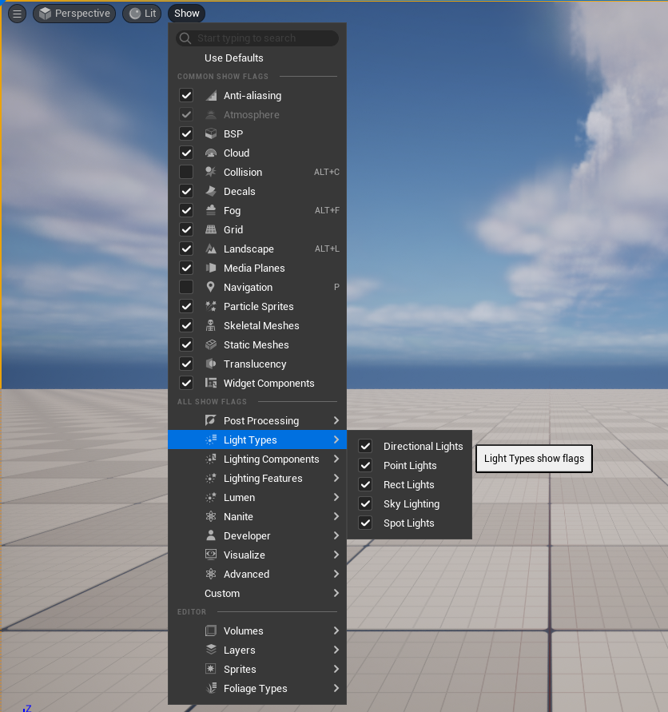

Visualizing UI issues using Show Flags
In Unreal the other engineering team use show flags to enable debug drawing, this feature is seldom use in UI and I was exploring if we could leverage that debug draw layer to dynamically visualize UI issues at runtime.
For this experiment we'll be making a simple validator to check if some displayed FText is properly localized according to some arbitrary rule and we'll visualize it by drawing a colored square around our text widget by creating a custom show flag ! So let's do it ☺
Step 1: Scaffolding
First step is always the scaffolding, we'll be making a very simple subsystem that'll take care of registering our draw function and holding any necessary data we might need.
For this I picked an Engine subsystem, since the show flag is always available and we only care about registering once for the application lifetime we might as well. Create two files TextLocalizationIndicatorSubsystem.h and TextLocalizationIndicatorSubsystem.cpp and write this inside :
1 2 3 4 5 6 7 8 9 10 11 12 13 14 15 16 17 18 19 20 21 | |
1 2 3 4 5 6 7 8 9 10 11 12 13 14 15 16 17 18 19 | |
Alright, with this we're ready to make write some debug code ! We'll do our event registering in the Initialize function, and we'll use the namespace for any static variables and function we need, it's good hygien to avoid any unity build issues later down the line.
Let's move on to making our custom show flag :)
Step 2: Custom ShowFlag
If you've never seen or used them, show flags are simple bit flag globally available to enable or disable specific render features, like the atmosphere, the sky, all static meshes... You can also use them to render debug visuals like the camera frustrum, or colision shapes for example. They're all available in the console by typing ShowFlag or in the editor viewport under the Show button :

The nice thing is that unreal provides a very simple construct to make arbitrary custom ones ! It uses the TCustomShowFlag struct to automatically create and register our show flag. We'll put ours in the local namespace we made:
1 2 3 4 5 6 7 | |
Easy enough right ? We've created a new flag named "TextLocalizationIndicator", if you compile and boot the editor you should already see it popup if you check in the "Custom" section. You can turn it on but it won't do much as is :)

Next step is to plug some debug visualization !
Step 3: Debug draw Service
To do things with our new flag, Unreal provides the UDebugDrawService global object with two functions Register and Unregister. Simple enough !
Let's look at the Register function :
1 2 | |
It takes our show flag name, and the delegate callback that will be automatically called every frame when the debug draw service is drawn. When is it drawn ? Directly in the GameViewportClient draw path, right after the HUD and before the subtitles, which means it should be drawn on top of "everything" as far as we're concerned.
1 2 3 4 5 6 7 8 9 10 11 12 13 14 15 16 17 18 | |
Alright, let's plug ourselves on this DebugDrawService. Make a static function with the right signature, update the Initialize function of our subsystem to register our debug function (and cleanup on Deinitialize !)
1 2 3 4 5 6 7 8 9 10 11 12 13 14 15 16 17 18 19 20 | |
Let's compile, and put a breakpoint in your draw function. If you type ShowFlag.TextLocalizationIndicator 1 in the console you should hit it !
Alright we almost have everything we need for the fun part, last step is to know how to draw stuff !
Step 4: Drawing stuff
Our draw function comes equipped with a Canvas object, if you look into it you'll see a whole lot of Draw function. We're UI engineers so we care about only two things, drawing boxes and text.
We can draw boxes using the DrawItem procedure, that function takes an FCanvasItem. It's a fairly simple interface that makes it easy to make your own custom, potentially more complex, drawing procedure. In our case we'll want to use FCanvasBoxItem directly since it does what we want. That item has a position, a size, and a line thickness property. Let's set all that :
1 2 3 4 5 6 | |
With this written, if we enable our show flag you'll see our box render on top of everything !
You'll notice that the coordinate system here is with respect to the viewport we render inside accounting for DPI. Our box is positionned at the pixel coordinate {100, 100} * DPIScale and has the pixel size {80, 45} * DPIScale. It's important to understand in which coordinate system we're working so we can do the right transformation when we'll work with widgets later.
I said earlier that we want to draw text, let's write some shenanigans centered in our box here :
1 2 3 4 5 6 7 8 9 10 11 12 13 14 15 16 17 18 19 | |
It extended a bit but that's what happens when we compute layouts by hand. In essence, we've parametrized our box so we can reference its position and size. Then we compute our future text size. Finally we set our draw color and compute the text position so it's properly centered.
The CreateFontRenderInfo is used so the DrawText procedures adds a shadow to help legibility, finally the DrawText function has self explanatory parameters.
And that's it ! We have a nicely centered text in our drawn box :

Ok we're done with the fun part, now let's work on the useful part :)
Step 5: Gathering Widgets
Now that we have a way to draw things, we want to show something. First I'll build a simple test widget (named W_TextLocalizationDemo) just so we have data to work with, it looks like this in the UMG editor :
Just a couple of text block, there's also an animation on the Bouncy Text so it moves around. Here's a simple graph to spawn it, dump this in the level blueprint :
From here when you press play and enable our custom show flag you should see the following :
Ok ! We have a widget showing up, our debug view still draws on top of them, we're ready to gather what we need and overlay debug information on top of our UI !
Here the nice thing to know is that UMG works with UWidget's, specifically widget's that are UObject. This means we can gather all existing instances using TObjectIterator (note that you shouldn't usually do this, but we're making an exception here. If it gets too slow we can always accelerate it later)
1 2 3 4 5 6 7 8 9 10 11 12 13 14 15 16 17 | |
Ok ! That's a good start, the next part is going to be more complicated, but there's three goals here :
- Find which window our widget's belongs.
- Verify that the widget is actually visible.
- Find the viewport geometry, remember when I talked about coordinate system, this will be important.
First step, finding the window. This is relatively easy, we just have to do something you should probably never do, climb up the slate hierarchy until we find a window :)
1 2 3 4 5 6 7 8 9 10 11 | |
Good, second objective, verify that we're actually visible :
1 2 3 4 5 6 7 8 9 10 11 12 13 14 15 16 17 18 19 | |
Alright, that's done, easy enough ! Final point is fetching the viewport's geometry :
1 2 3 4 5 6 7 8 9 10 11 12 13 14 15 16 17 18 19 20 21 22 23 | |
And that's it for this part ! At this point we know we have a widget that's actually present and drawn on the screen. Note that I don't do any overlap checks, but ultimately you can add anything to the sauce. You can check that the widget belongs to the current active root if you're using CommonUI, or that it's the topmost TextBlock depending on whatever menu system you're using.
With our variable in hand, we can conclude our loop by skipping any widget that's not visible. The full function should look like this :
1 2 3 4 5 6 7 8 9 10 11 12 13 14 15 16 17 18 19 20 21 22 23 24 25 26 27 28 29 30 31 32 33 34 35 36 37 38 39 40 41 42 43 44 45 46 47 48 49 50 51 52 | |
Don't hesitate to run it and put some breakpoints to get a feel of the code flow ! You can also log your visible TextBlock name for example, at this point I can't convince you that we have exactly the right widgets, but we'll soon see something on screen !
Step 6: Overlay our widgets
Alright ! At this point we have all the information we need to overlay a nice box on our textblocks, remember what I said about coordinates system ? The debug canvas is drawn in the viewport space. Which means that thanks to the viewport geometry we grabbed, we can trivially transform the widget's geometry in our canvas space !
Look at this :
1 2 3 4 5 | |
See, not so hard when we know who's in which space :)
Ok, we have a position in canvas space, let's draw our box like we did previously.
1 2 3 4 5 6 7 8 9 10 11 12 13 14 15 16 17 18 19 | |
Thanks to the work we did to parametrize our layout correctly there's almost no changes. With this recompiled we should see the following in game :
Ain't that great ? We can overlay debug information on any widget we'd like now, and we can show any information we care about. Let's go back to our first goal then, let's validate that the displayed text is correctly localized and show info about that.
Step 7: Text Validation
Let's write a quick text validation function, I won't get into the details but it quickly checks that we either use a string table, or that we've set a proper namespace on the FText, if you reuse this code I encourage you to actually write your own check that makes sense for your environment since this doesn't cover a bunch of situations.
1 2 3 4 5 6 7 8 9 10 11 12 13 14 15 16 17 18 19 20 21 22 23 24 25 26 27 28 29 30 31 32 33 34 35 36 37 38 39 40 41 | |
This function is simple enough, the idea is to pass it a text. It then tells us if the text is valid or not, and gives us some textual information about why it's valid or not to show the user.
Let's go back to our draw function and use our validation function !
1 2 3 4 5 6 7 8 9 10 11 12 13 14 15 16 17 18 19 20 21 22 | |
Not that much change. Let's compile and see the result :
Conclusion
There we go ! We have generated an overlayed debug view that allows us to see dynamic information about the current state of localizable strings in the game's UI.
The code is simple enough that we can improve it, cover more widget types, do more complex verifications. Hopefully it at least inspired you to write your own overlay vizualizer to check what widgets are misconfigured or need attention ! Why not one that shows texture size for example ?
As usual the full code is publicly available on my github under MIT :
Hope you had fun reading this, don't hesitate to come ask question on discord, or poke me directly on bluesky.
Cheers !